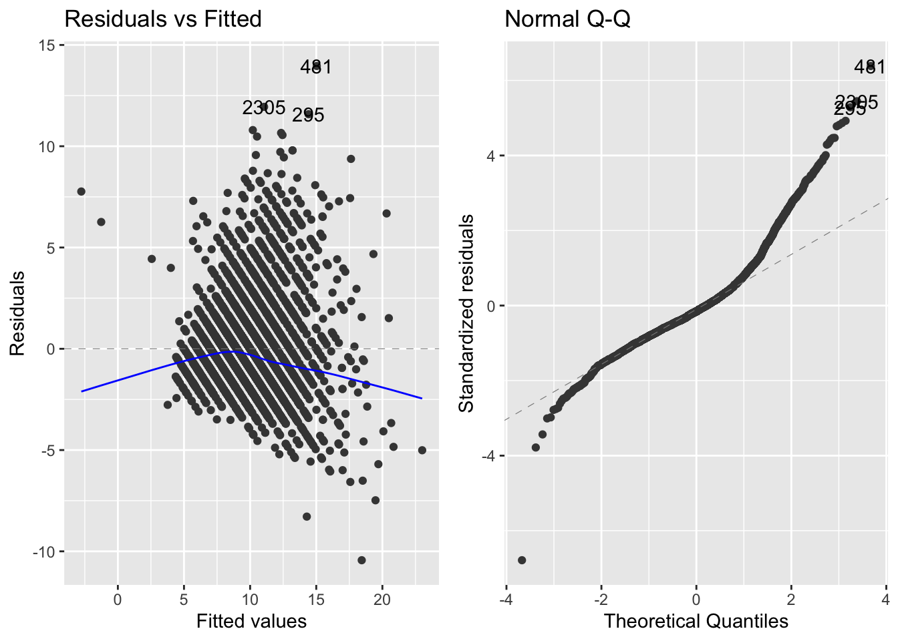
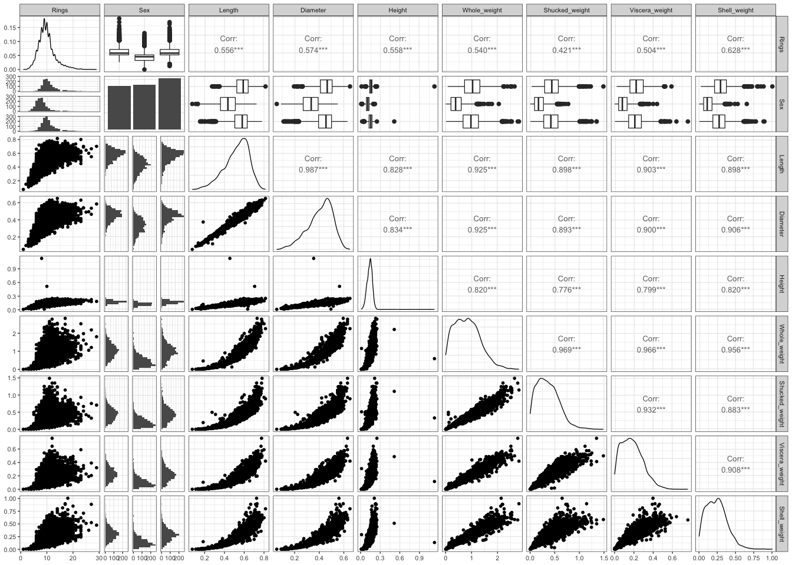
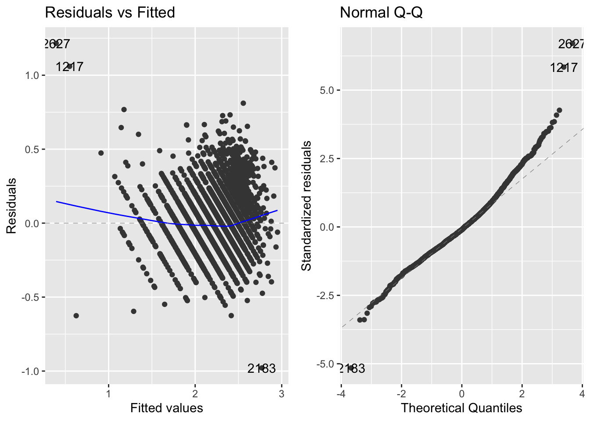
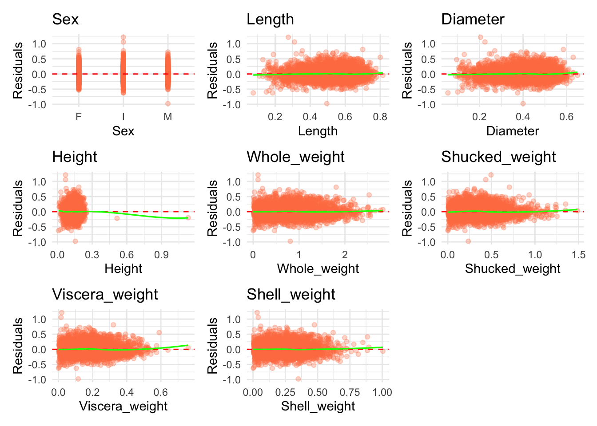
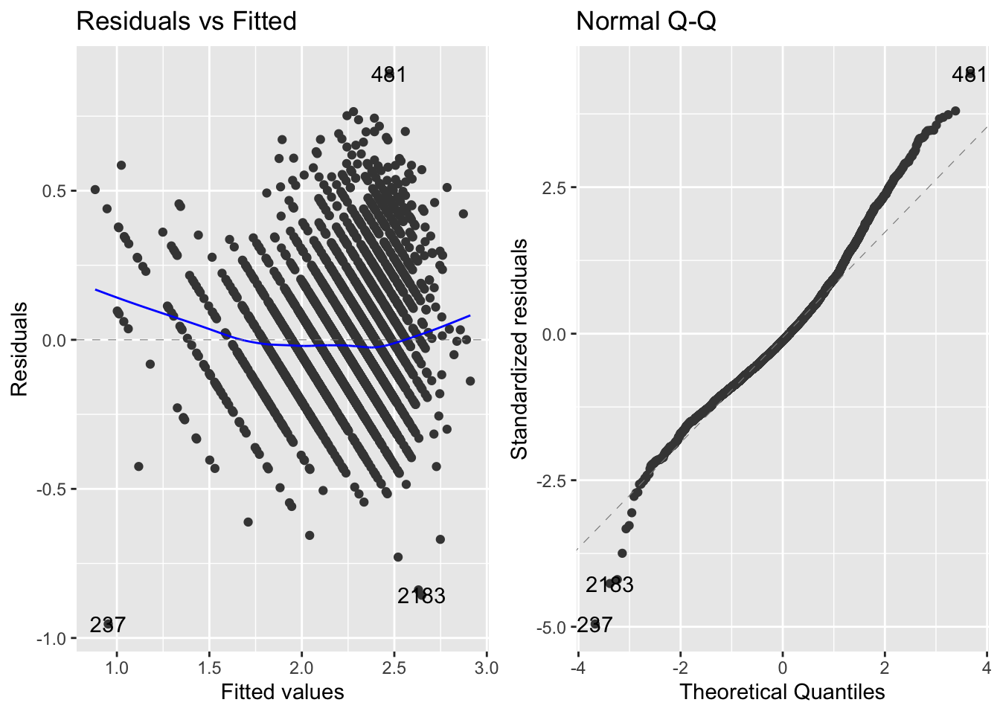
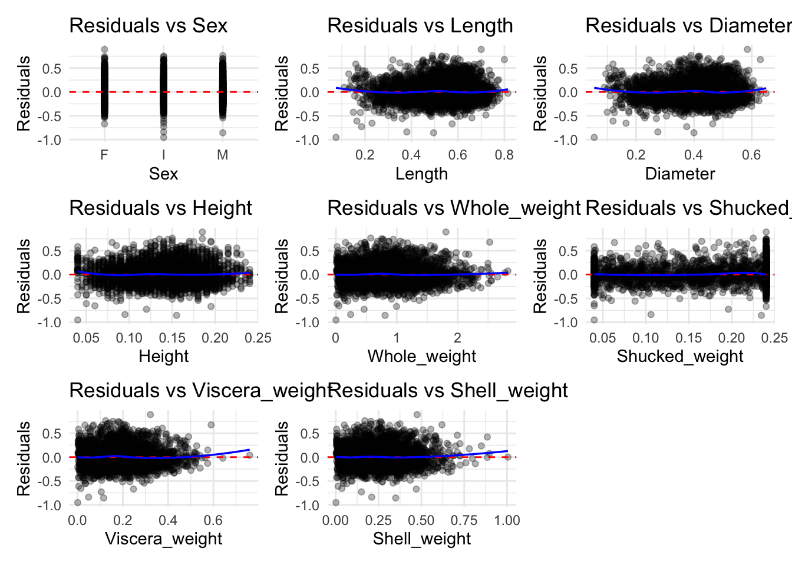
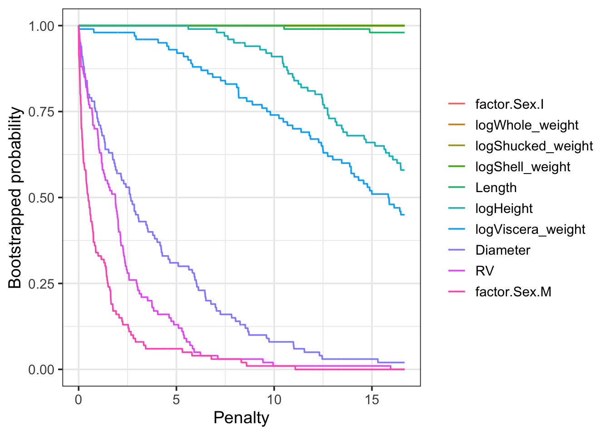
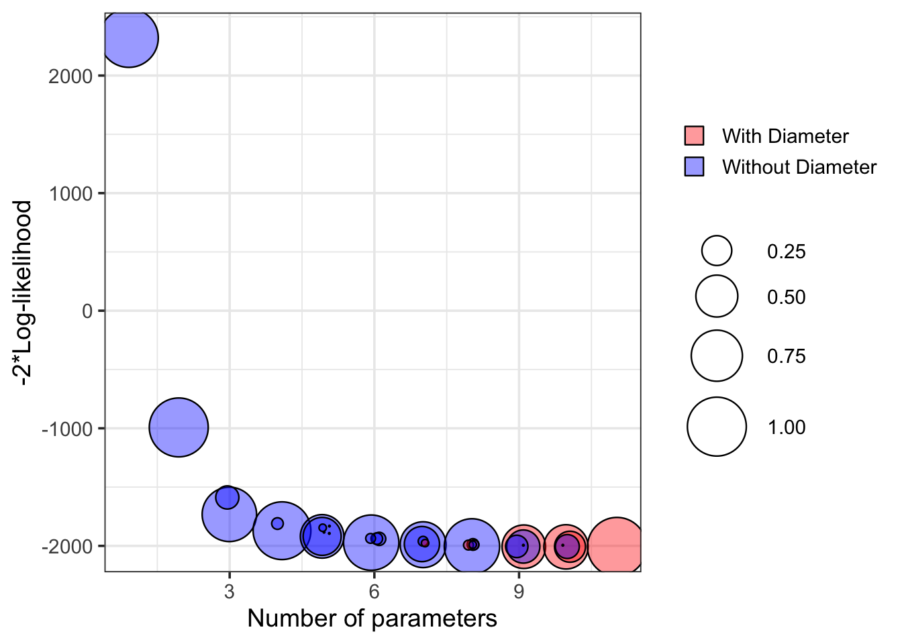
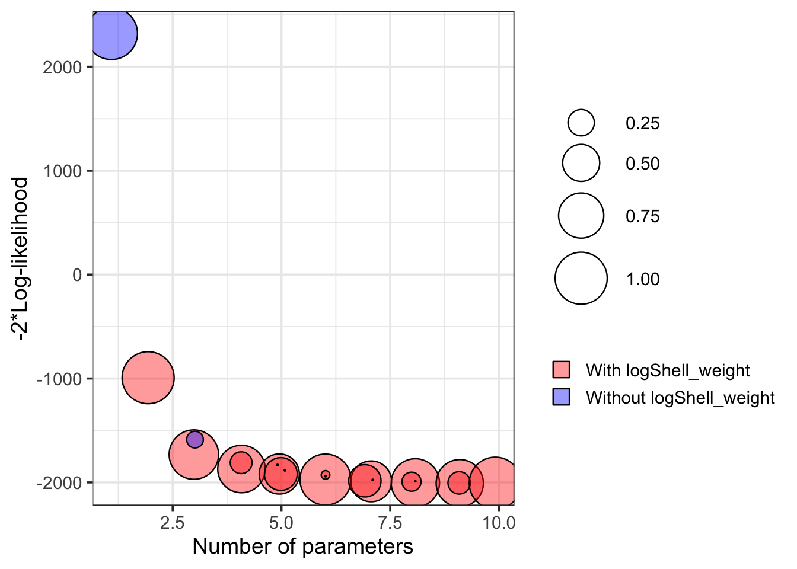
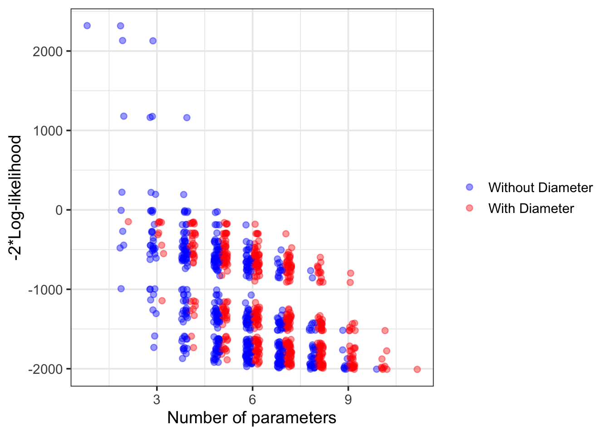

Predicting Abalone Age Using Statistical Learning
Executive summary
Older abalone are worth more on the commercial market, and are much better breeders than their younger counterparts. Still, the two traditional methods of ageing them, shell ring counting and stable oxygen isotopes, are limited to a laboratory setting. This paper seeks to create a predictive linear regression model to ascertain the ages of these abalone based on their physical characteristics, using AIC and BIC to inform model selection before running several further tests to confirm the associated choices. This model has the potential to open up the process of ageing abalone to a much wider audience, especially in industrial fishing practices, where the process of measuring the abalone can be done en masse. Whilst a model was generated, its accuracy was somewhat limited with a 0.64 R-Squared value, remaining a potential solution for filling the niche that is abalone age estimation.
1. Model Assumptions and Transformation
1.1 Initial Model Diagnostics
The initial full model diagnostics suggested violations of several linear regression assumptions. The residuals versus fitted plot displayed noticeable curvature and heteroskedasticity, while the Q-Q plot demonstrated substantial deviation from normality in both tails. These patterns indicated that transformation of several continuous predictors would likely improve model fit and residual behaviour.
To further investigate the source of these assumption violations, pairwise relationships between Rings and the continuous predictors were examined. Several predictors exhibited strong skewness, nonlinear relationships, and increasing variance patterns. In addition, substantial multicollinearity was observed among multiple size and weight variables, particularly between Length and Diameter.
1.2 Variable Relationships and Multicollinearity

The extremely high correlations among several physical measurements suggested substantial redundancy within the predictor set, motivating later subset selection and stability analysis.
1.3 Feature Transformation Strategy
| Variable | Transformation | Reason |
|---|---|---|
| Rings | Log | Reduced heteroskedasticity and improved residual spread |
| Height | Log | Improved linearity and residual distribution |
| Whole weight | Log | Reduced skewness and fanning pattern |
| Shucked weight | Log | Improved homoskedasticity |
| Viscera weight | Log | Reduced skewness and improved residual pattern |
| Shell weight | Log | Improved residual distribution |
1.4 Transformed Model Diagnostics

The transformed model demonstrates noticeable improvement in homoskedasticity and linearity compared to the original specification. Although mild deviation from normality remains in the upper tail of the QQ plot, the residual spread is substantially more stable following logarithmic transformation.
1.5 Residual Behaviour Across Predictors

Residual patterns across most predictors appear more evenly distributed around zero after transformation, with reduced evidence of strong curvature or fanning. Minor heteroskedasticity remains among several weight-related predictors, although the overall variance structure is substantially more stable than in the initial model.
The smoother residual trends for Height, Diameter, and Length suggest improved linearity assumptions under the transformed specification.
1.6 Outlier Treatment
Several predictors, particularly Height and Shucked_weight, contained extreme observations that distorted the residual patterns and influenced the fitted smoothing lines. To reduce the influence of these observations while preserving the overall structure of the dataset, outliers were winsorised using the interquartile range rule by replacing values beyond the upper and lower bounds with the respective threshold values. Diagnostic plots were then re-evaluated following outlier treatment.


Compared to the original model, the transformed model shows noticeable improvement in the homoskedasticity assumption, particularly for Height, Diameter, and Length. While several weight-related predictors still display slight fanning patterns, the residual spread appears substantially more stable overall. The residual plots across predictors also suggest improved linearity and more consistent variance behaviour after transformation and outlier treatment.
The Q-Q plot similarly demonstrates improved normality, especially within the central quantiles and left tail. However, some deviation remains in the upper tail, indicating that mild non-normality is still present in the final model. Despite this limitation, the transformed specification represents a clear improvement over the original model and is considered sufficiently appropriate for further model selection and evaluation.
2. Model selection
To identify the most appropriate predictive model, three selection approaches were applied: forward and backward stepwise selection using AIC, stepwise selection using BIC, and exhaustive subset selection.
The AIC-based procedures retained the full transformed model, suggesting that all predictors contributed incrementally to predictive fit. In contrast, BIC-based selection removed Diameter, suggesting that this variable may add limited incremental value once other size and weight variables are included. Exhaustive subset selection also favoured a seven-variable model, excluding Viscera weight.
The three candidate models retained for evaluation were therefore:
| Model | Selection_Method | Variables_Removed | Interpretation |
|---|---|---|---|
| Model 1: Full Transformed Model | Stepwise AIC | None | Best predictive fit under AIC |
| Model 2: No Diameter | Stepwise BIC | Diameter | More parsimonious model under BIC |
| Model 3: No Viscera Weight | Exhaustive Subset Selection | Viscera weight | Alternative reduced model with strong fit |
These candidate models were subsequently evaluated using model diagnostics, predictive performance metrics, and stability analysis to determine the preferred final specification.
3. Assessing In and Out Sample Performance
| Model | AIC | BIC | Adjusted R Squared |
|---|---|---|---|
| Model 1 (With Diameter) | -1985.80 | -1922.232 | 0.6445 |
| Model 2 (No Diameter) | -1985.60 | -1916.092 | 0.6453 |
| Model 3 (No Viscera Weight) | -1973.53 | -1910.165 | 0.6441 |
| Model | RMSE | MAE |
|---|---|---|
| Model 1 (With Diameter) | 0.1912 | 0.1468 |
| Model 2 (No Diameter) | 0.1911 | 0.1466 |
| Model 3 (No Viscera Weight) | 0.1912 | 0.1469 |
Model 1 achieved the lowest AIC and BIC, indicating the strongest in-sample fit among the candidate models. However, Model 2 achieved the lowest out-of-sample RMSE and MAE, so it was selected as the preferred final model due to its slightly better predictive performance and simpler specification.
For out-of-sample performance, Model 2 achieved the lowest RMSE and MAE, suggesting slightly stronger predictive accuracy on unseen data. Given its comparable in-sample performance, reduced complexity, and marginally lower prediction error, Model 2 was selected as the preferred final model.
4. Model Stability and Robustness Analysis
4.1 Variable inclusion plot

The variable inclusion plot evaluates how consistently predictors are retained under increasing model penalisation. Diameter exhibits relatively low inclusion probability and behaves similarly to the random variable benchmark, indicating that it is frequently excluded from the preferred model specifications. In contrast, variables such as Length and logHeight remain consistently retained across a wider penalty range. This suggests that Diameter contributes limited additional explanatory value once other highly correlated size measurements are included, providing further evidence of multicollinearity within the full model.
4.2 Model stability plot

The model stability plot compares the trade-off between model fit and model robustness across different model specifications. Lower values on the vertical axis indicate stronger model fit, while greater clustering and overlap among the candidate models suggest increased stability under variable selection procedures. The reduced model excluding Diameter demonstrates similar predictive performance to the full model while exhibiting greater clustering behaviour, indicating improved robustness. This suggests that Diameter contributes limited independent explanatory power once other highly correlated size variables are included, reinforcing the presence of multicollinearity within the full specification.
4.3 Stability Comparison Between Candidate Models

The reduced model demonstrates substantially greater clustering and overlap across the candidate specifications, indicating improved model stability under variable selection procedures. Predictors that consistently remain included across different penalty levels are generally considered more robust contributors to model performance. In contrast, unstable variables tend to appear inconsistently and lead to greater sensitivity in model fit. The stronger clustering observed in the reduced specification suggests that the model is less sensitive to small changes in variable inclusion, supporting the decision to favour the more parsimonious model.
4.4 Loss versus dimension plots
This plot focuses more directly on the trade-off between model complexity and model fit.

The loss versus dimension plot highlights the trade-off between model complexity and model fit across different candidate specifications. Although the inclusion of Diameter marginally improves model fit, the improvement is relatively small compared to the increase in model complexity and instability observed in earlier diagnostics. The reduced model excluding Diameter achieves comparable predictive performance while demonstrating greater robustness under variable selection procedures. This reinforces the importance of balancing predictive fit with model stability when selecting the final specification.
5. Conclusion
This project developed and evaluated multiple regression-based models for predicting abalone age using physical and biological measurements. Through the application of logarithmic transformations, model diagnostics, subset selection procedures, and stability analysis, a reduced model excluding Diameter was ultimately selected due to its comparable predictive performance and improved robustness under variable selection.
The results demonstrate that predictive statistical modelling can provide a practical alternative to traditional laboratory-based ageing methods such as microscopic ring counting and stable oxygen isotope analysis. Although the selected model achieved only moderate explanatory power, the relatively low prediction error and simplified specification suggest that statistical learning approaches remain valuable for large-scale preliminary age estimation.
The analysis also highlighted the importance of balancing predictive fit with model stability and interpretability. In particular, strong multicollinearity among several physical measurements reduced the independent contribution of certain predictors, reinforcing the value of parsimonious model selection.
Several limitations remain, including moderate model accuracy, sensitivity to outlier treatment, and the reliance on variables such as shucked and viscera weight that may not always be practical in non-invasive settings. Future research could explore alternative predictors, larger datasets, and more advanced machine learning techniques to improve predictive performance while reducing dependence on destructive measurements.
6. References
Fox, J. (2024). car package. RDocumentation. https://www.rdocumentation.org/packages/car/versions/3.1-3
Kuhn, M. (2019). The caret package. https://topepo.github.io/caret/
Müller, S., & Welsh, A. H. (2010). On model selection curves. International Statistical Review, 78(2), 240–256. https://doi.org/10.1111/j.1751-5823.2010.00108.x
Wickham, H., Averick, M., Bryan, J., et al. (2019). Welcome to the Tidyverse. Journal of Open Source Software, 4(43), 1686. https://doi.org/10.21105/joss.01686
7. Technical Stack:
• R • Statistical Learning • Linear Regression • Model Selection (AIC/BIC/Subsets) • Bootstrap Stability Analysis • ggplot2 / tidyverse / Quarto
7.1 Tools Used
R, ggplot2, caret, leaps, broom, GGally, kableExtra, patchwork, Quarto